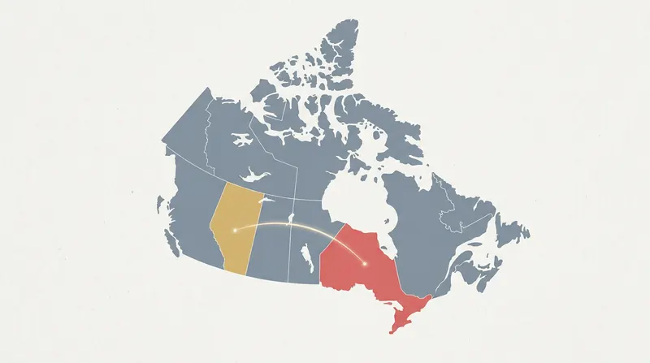

By Alex Drummond, Editor-in-Chief · May 1, 2026 · Fact-checked by Maya Chen

Alberta's regulated online gaming market will open to private-sector operators on July 13, 2026, Service Alberta Minister Dale Nally confirmed this month in a letter to industry and at a media briefing in Edmonton. The announcement puts a firm date on a file that has sat in regulatory drafting for a year and turns the Alberta iGaming Corporation, the provincial body that will contract with each licensed operator, from an abstract policy entity into a live counterparty. The date also turns Ontario's four-year-old ring-fenced poker model into a two-province question.
Thirty-two operators had submitted registration applications to the Alcohol, Gaming, Liquor and Cannabis regulator by the end of April, Nally said at the Edmonton briefing, and twenty of them had paid the C$150,000 annual registration deposit. Sportsbook operators DraftKings and theScore Bet joined the pipeline this month. The AGLC has not published a full list but has confirmed that the pipeline includes every major brand already registered in Ontario.
What the Alberta Rules Actually Say
The commercial framework for the Alberta launch closely mirrors Ontario's, with three material differences. The headline revenue split is 80/20 in favour of operators, the same as Ontario, but Alberta calculates the split on gross gaming revenue net of a three per cent deduction for First Nations funding (two per cent) and social responsibility programmes (one per cent). The effective tax rate is therefore slightly higher than Ontario's flat 20 per cent of gross revenue. The licensing fee structure is also different: Alberta operators will pay a one-off C$50,000 application fee and a C$150,000 annual registration fee, against Ontario's two-stage C$100,000-per-site structure. Suppliers pay a C$15,000 annual fee for standard registration or C$3,000 for other goods and services.
Alberta has also diverged on three technical and player-protection dimensions. Operators must integrate with a new centralized self-exclusion registry managed by the AGLC, covering both online and land-based play, a model closer to the centralized BetGuard system Ontario is building than to the legacy per-operator lists Ontario launched with in 2022. Player-protection reminders are stricter in Alberta, with quarterly reminders on deposit and time limits and monthly financial-activity statements required. And operators must provide a SOC 2 Type 1 attestation before go-live, with SOC 2 Type 2 and ISO 27001 certification required by 2028, a materially higher information-security bar than Ontario currently maintains.
The legal gambling age in Alberta will be 18, one year lower than Ontario. Registered operators in Ontario are eligible for a risk-based due-diligence fast-track when they apply in Alberta, a concession that Nally's office has said is designed to avoid asking incumbents to re-prove compliance from scratch. The fast-track will not remove the commercial agreement requirement with the Alberta iGaming Corporation, which is the step that remained outstanding for most of the 32 applicants as of late April.
The Six Ontario Poker Brands in the Pipeline
Every operator currently registered for peer-to-peer poker in Ontario is expected to apply for a licence in Alberta. Industry reporting at Pokerfuse has identified GGPoker Ontario, PokerStars Ontario, 888poker Ontario, BetMGM Poker, PartyPoker Ontario and Bwin Ontario as likely applicants, with most publicly signalling they will proceed only if a multi-provincial agreement on shared poker liquidity is in place or close to it. None of the six poker brands has formally disclosed its Alberta application status.
The PokerStars application is being watched closely inside the sector. Flutter Entertainment, the parent of both PokerStars and FanDuel, has accelerated its platform consolidation in North America and is expected to enter Alberta under the same unified FanDuel-branded client that will go live in Ontario on May 5 with the retirement of progressive jackpots. Flutter's commercial rationale for building one platform for the two provinces is straightforward, but the platform rationale collapses to nothing unless the two provinces agree to share liquidity; two ring-fenced markets with one client software is the same operational cost as two separate builds.
GGPoker Ontario, currently the largest peer-to-peer poker operator in Ontario with an estimated market share in the 45 to 50 per cent range, has made no secret of its interest in Alberta. The operator's global client runs branded country editions in more than a dozen jurisdictions, and Alberta would become the seventh regulated Canadian, U.S. or European ring-fence that the network supports alongside its main dot-com platform.
The Shared-Liquidity Question
The legal architecture for a Canadian inter-provincial shared liquidity agreement exists, in principle. The Criminal Code allows a province to offer gaming "alone or together with another province", and the language has been the basis of every multi-jurisdiction lottery arrangement in Canadian history. What is new is the political willingness to use that language for internet gaming specifically, and the regulatory apparatus on both sides of the provincial line to make it work.
Service Alberta has indicated repeatedly that Bill 48, the iGaming Alberta Act passed in May 2025, contemplates shared liquidity, though the legislation does not mandate it. Nally has said in several interviews that Alberta is "open to conversations" with iGaming Ontario about pooling poker and daily fantasy sports traffic across the two provinces. Ontario's Alcohol and Gaming Commission has confirmed that it is studying the implications of the November 2025 Ontario Court of Appeal ruling, which cleared the constitutional path for open liquidity including international pool-sharing, but has not committed to either a timetable or an architecture for inter-provincial sharing. The Canadian Lottery Coalition is preparing a leave application to the Supreme Court of Canada, and Alberta was granted intervener status in that matter in late April.
Industry analysts at MundoVideo have estimated that shared Ontario-Alberta liquidity would increase Ontario poker participation by 40 to 60 per cent at launch, a figure derived from the observed uplift Pennsylvania, Michigan and New Jersey saw when they joined the Multi-State Internet Gaming Agreement in stages between 2018 and 2025. Alberta's population is approximately 4.7 million against Ontario's 15.8 million, so the combined pool, if it materialises, would be meaningfully larger than Ontario alone but still well short of the US$300 million guarantees that GGPoker can offer on its global dot-com client without any provincial constraint.
What It Means for Ontario Players Now
The answer for the next ten weeks is nothing. Alberta's market is opening to operators, not to Ontario players. Canadians who live in the two provinces will continue to play on their respective ring-fenced clients. The Alberta legal gambling age of 18 does not apply to players physically located in Ontario, and Ontario's 19 minimum will remain. The Criminal Code still requires each province to conduct and manage the gaming activity available to its own residents.
What changes on July 13 is the list of options for any future Ontario regulatory action on shared liquidity. Until Alberta went live, the only non-Ontario jurisdiction that could plausibly seat Ontario players in a pooled peer-to-peer poker game was an international one, which the Court of Appeal ruling addresses and the Supreme Court appeal is likely to test. From mid-July, Ontario will have a Canadian counterparty operating under a framework deliberately designed to be compatible with its own, run by a regulator with signed memorandum-of-understanding relationships with the AGCO, and staffed in several senior positions by people who worked on the Ontario launch.
Industry observers in Toronto continue to set 2027 as the earliest plausible date for shared poker liquidity, pending the Supreme Court leave application on the Court of Appeal's international liquidity ruling, the AGCO's own technical work on the FanDuel-PokerStars migration, and the completion of the Alberta onboarding process. The July 13 launch is the necessary first step, not the finish line.
Outlook
For Ontario's peer-to-peer poker market, the Alberta launch is the most consequential regulatory event since the province opened its own market in April 2022. It will not move the player-pool needle this summer, and it may not move it in 2026 at all. What it will move is the answer to the question every poker operator in Ontario has been asked for four years: if shared liquidity ever arrives, who are the shared-liquidity partners?
The answer is now a name, a date, and a list of 32 applicants, 20 deposits paid. Alberta is coming online in ten weeks. The rest of the arithmetic, and the regulatory will to change it, remains Ontario's decision to make.